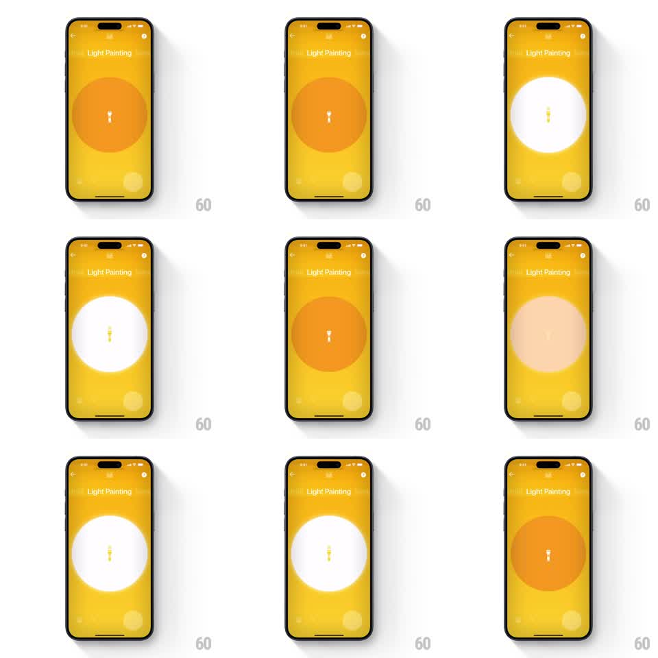

Media
Frame-by-frame

Rebuild this interaction 1:1: Polaroid's Light Painting flash toggle - a big circular button that springs between a dim orange off-state and a glowing white on-state, spilling light across the yellow screen.

Rebuild this interaction 1:1: Polaroid's Light Painting flash toggle - a big circular button that springs between a dim orange off-state and a glowing white on-state, spilling light across the yellow screen. ## Integration Integration: stack-agnostic spec - springs given as stiffness/damping, timed motions as duration + curve; map every value to your framework and animation library of choice. ## Scene Saturated yellow "Light Painting" screen (back chevron top-left, info icon top-right, faint bokeh circles floating in the background). Center: a huge circular toggle - deep orange with a small flashlight icon when off, brilliant glowing white with a dark icon when on. ## Motion spec Pattern: springy light-source toggle with screen-wide glow spill. - Tap: the circle presses (scale 1 -> 0.92, 100ms) then blooms (scale to 1.06 -> 1, spring ~340/13). - Turning on: the fill flashes from orange to white (150ms) while a radial glow spills outward across the whole screen (white overlay radiating from the button, opacity to 35%, 400ms, ease-out); the flashlight icon inverts color (crossfade 150ms) and the bokeh circles brighten (opacity +20%). - The glow settles with a slow breathe (opacity 35% -> 28% -> 35%, 2.4s loop) while on. - Turning off: the glow sucks back into the circle (300ms, ease-in), the fill returns to orange with the same press-bloom press feedback, and the bokeh dims back. - A tiny spark burst (4-6 white specks, 60pt radius, 300ms) fires on each toggle. ## Calibration - The on-state must read as emitting light: brightest at the circle, feathering to nothing at the edges. - Press feedback happens on both transitions; the glow only on on. ## Reduced motion Fill and glow crossfade (200ms); no bloom, no spark burst. ## Don't miss - The icon stays centered and small through every state - the circle is the star. - Yellow background, orange off, white on: three fixed brand colors, no intermediate purples or grays.